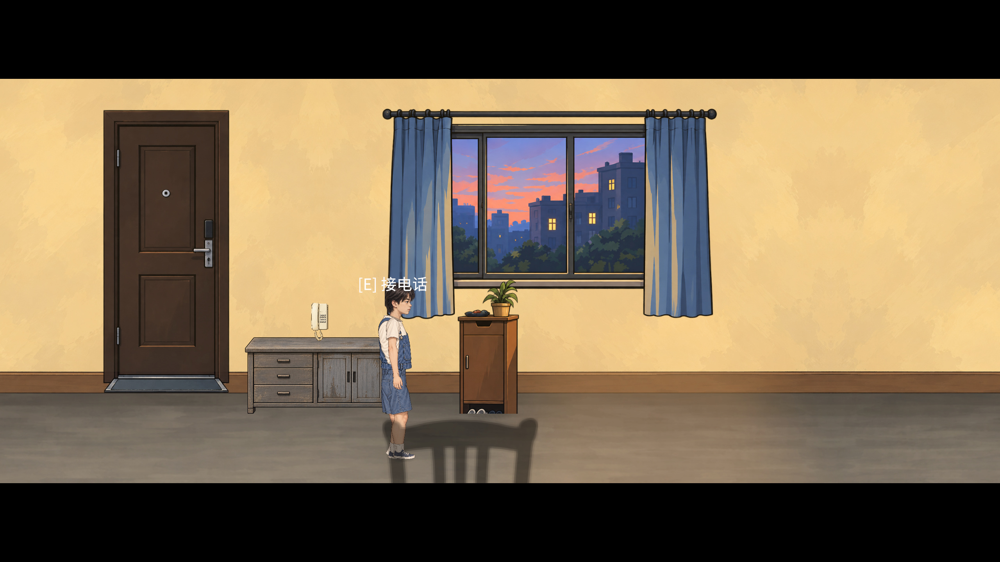
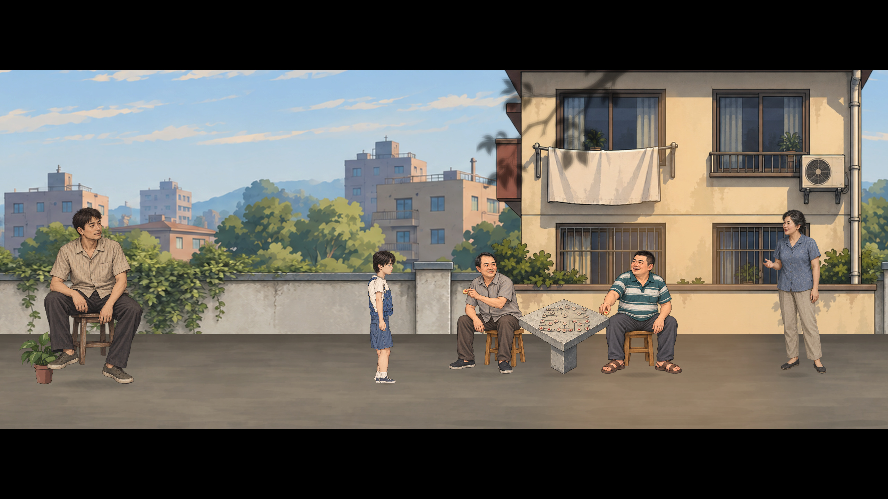
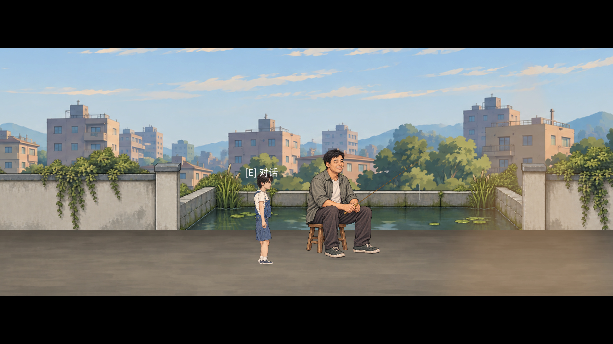

P04 · 最终人工审计预览
童年章节与回返客厅，本阶段24项内部检查完成，等待你的美术与体验审计。请先看正常速度，再按需要使用慢速和原尺寸图。未创建P04提交。
完整报告 · 英文存档文案 · 空间参数与防回退卡
最新实际游戏录像
正常速度 1× · 录像不含音轨，游戏中的吉他原音乐保留。使用慢速不生成重复录像。
最终画面
问题前后对照
旧前景椅背

修复前 · 仅作问题记录最终 · 实际游戏视图重复巨大邻居

修复前 · 仅作问题记录最终 · 实际游戏视图钓鱼人比例与单根鱼竿

修复前 · 仅作问题记录最终 · 实际游戏视图从左到右：18处连续街道检查
来自同一次真实D移动回放。池塘两端、墙柱、压顶和地面一起检查；可点开完整画面。
内部证据及验证范围
251项整轮回归、最终显示修复后27项卧室复测、17项编辑态审计分别保留。Windows开发构建0错误/488警告。章节检查使用隔离存档、原输入回放及部分原交互回调，不冒充真人新游戏全程通关。
整轮检查 · 最终卧室复测 · 编辑态检查 · 构建